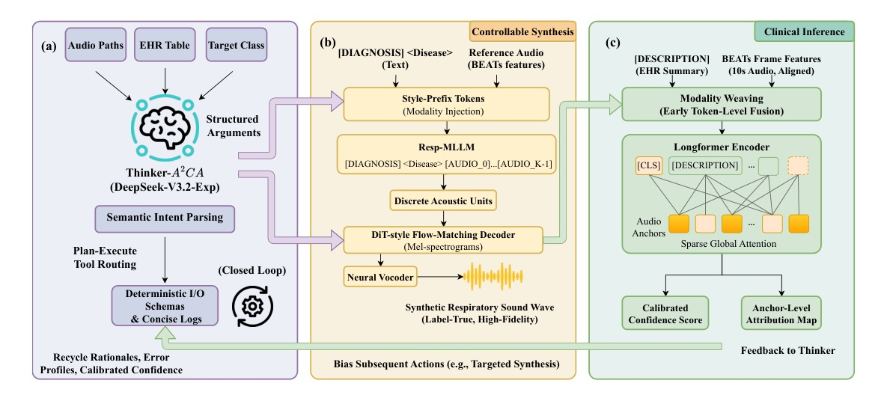
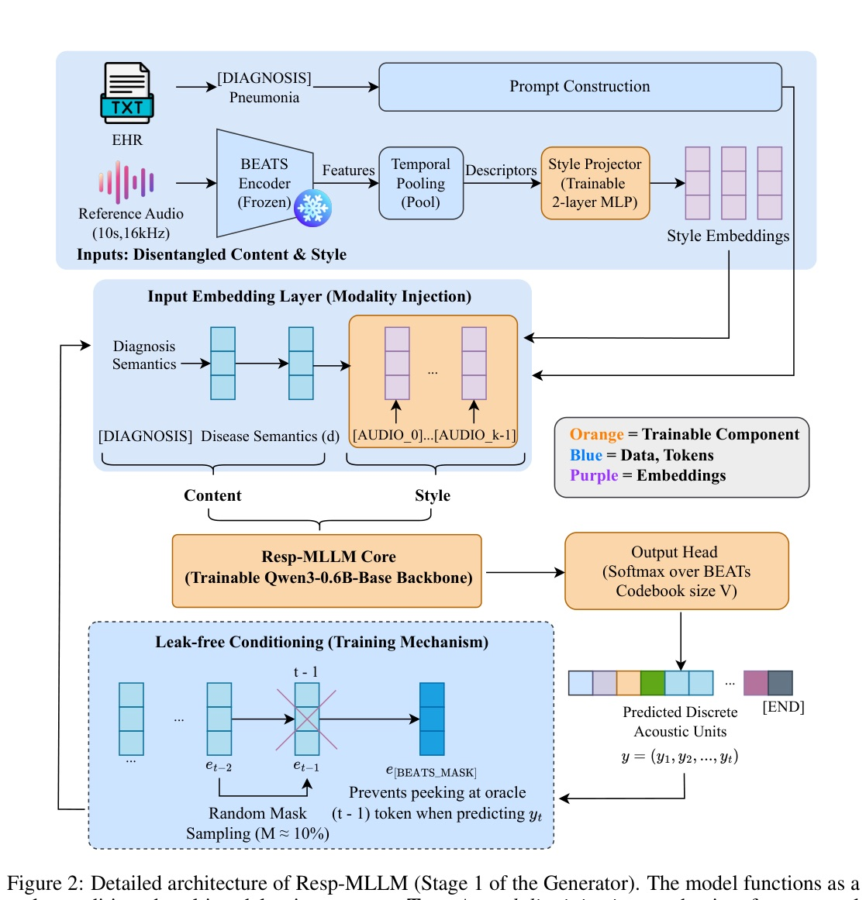
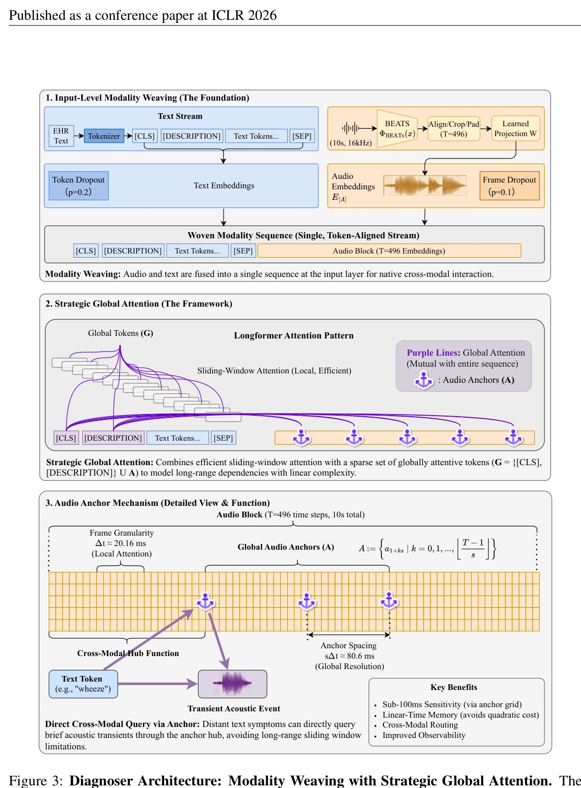

把 failure mining 接上可控生成器，augmentation 就從「補資料」變成「agent 控制迴路」。
Thinker-A2CA 找診斷弱點，Generator 合成目標病例，Diagnoser 用 text-audio anchors 捕捉短暫病理聲音。
| Split | #Files | Hours | Mean s |
|---|---|---|---|
| Train | 196,654 | 341 | 6.2 |
| Valid | 16,931 | 31 | 6.6 |
| Test | 15,516 | 36 | 8.4 |
| Total | 229,101 | 408 | 6.4 |



Anchors 決定模型「看得到哪裡」；Generator 決定訓練時「看過什麼 rare cases」。
Thinker-A2CA 的價值，是把這兩件事用 failure signal 連成同一個 active curriculum。
| Method | Backbone | Sp | Se | Score |
|---|---|---|---|---|
| BTS 2024 | CLAP | 81.40 | 45.67 | 63.54 |
| Wang et al. 2024 | HTS-AT | 79.61 | 48.77 | 64.19 |
| MVST 2024 | AST | 81.99 | 51.10 | 66.55 |
| Dong et al. 2025 | AST | 85.99 | 49.11 | 67.55 |
| Resp-Agent | LLM + Longformer | 79.29 | 66.10 | 72.70 |
| Model | Acc orig | Acc balanced | F1 orig | F1 balanced |
|---|---|---|---|---|
| Conformer audio-only | 0.7200 | 0.7820 | 0.1935 | 0.5360 |
| Longformer no anchors | 0.6495 | 0.7630 | 0.1890 | 0.5200 |
| Resp-Agent multimodal | 0.8494 | 0.8870 | 0.2118 | 0.5980 |
| Policy | B k | Acc | Macro-F1 | F1 tail | LoSO F1/tail |
|---|---|---|---|---|---|
| No-Synth CE | 0 | 0.849 | 0.212 | 0.074 | 0.237 / 0.086 |
| Random | 50 | 0.869 | 0.442 | 0.291 | n/r |
| Class-Prior | 50 | 0.876 | 0.512 | 0.349 | 0.473 / 0.334 |
| Uncertainty-Static | 50 | 0.881 | 0.546 | 0.376 | n/r |
| Thinker-A2CA | 50 | 0.887 | 0.598 | 0.421 | 0.532 / 0.383 |
| Test | Style-Sim | P-Acc | FAD |
|---|---|---|---|
| Style-swap avg | 0.91 | 97.9% | 1.18 |
| Content-swap avg | 0.93 | 96.1% | 1.19 |
| Config | Acc | F1 |
|---|---|---|
| Late Fusion + raw | 0.780 | 0.145 |
| Weaving + LLM EHR no anchors | 0.650 | 0.189 |
| Full + anchors | 0.849 | 0.212 |
一個好的 medical AI agent，不只是回答問題，而是主動修正自己的資料分佈。
Resp-Agent 把「模型錯在哪」變成下一批 synthetic training examples 的生成條件。這才是 closed-loop agent system 的含金量。
“Resp-Agent, an autonomous multimodal system orchestrated by a novel Active Adversarial Curriculum Agent (Thinker-A2CA)… actively identifies diagnostic weaknesses and schedules targeted synthesis in a closed loop.”
Resp-Agent 的關鍵不是把幾個模型串起來，而是讓 Thinker-A2CA 根據診斷弱點主動安排合成資料，形成閉環課程。Abstract p.1
“For a 10 s segment embedded into T=496 time steps… adjacent global anchors are spaced by… 80.6452 ms… worst-case deviation ≤40.3 ms.”
這個數字把 audio anchor 從抽象設計落到臨床聲音事件尺度：不用 full quadratic，也能以 sub-100ms 解析度對齊瞬態聲音。§4.2.2 p.8
“Thinker-A2CA achieves a Macro-F1 of 0.598 and a Macro-F1tail of 0.421… +0.052 Macro-F1 and +0.045 Macro-F1tail over… static-uncertainty baseline.”
同預算比較才看出 agent planner 的價值：不是合成越多越好，而是選對該合成的 rare / hard cases。§5 p.9
“Tightly coupling where the model fails with what the generator synthesizes transforms augmentation from a passive remedy into an active, self-correcting training curriculum.”
把 failure mining 與可控生成器接起來，augmentation 就從資料前處理變成系統級控制迴路。§6 p.10
週日輪轉：火爆 GitHub Repo 或公司技術報告。